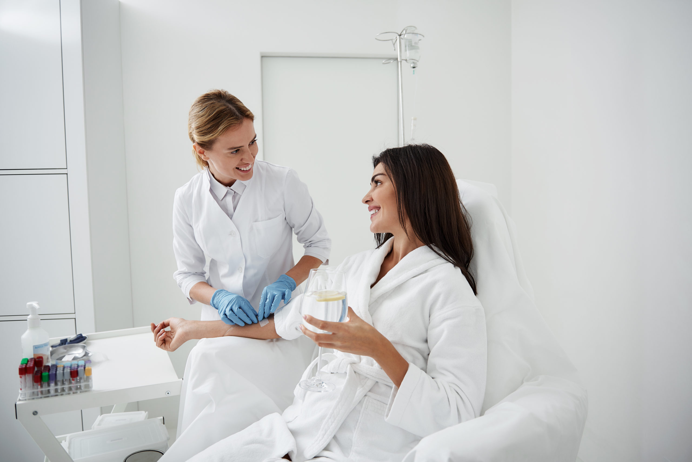

"Хочу висловити щиру подяку фельдшеру Михайлу. Його професійний підхід і здатність заспокоїти мене зробили всю ситуацію легшою."
Валентина
Крапельниця Попелюшка — коктейль з 3 антиоксидантів: глутатіону, альфа-ліпоєвої кислоти та вітаміну С. Процедура для краси, молодості та здоров'я шкіри.

Наші клієнти помічають результат вже після першої процедури. Глутатіон + вітамін С + альфа-ліпоєва кислота — це потрійний удар по старінню.
Крапельниця «Попелюшка» — сучасна методика інфузійної терапії. Вона створена, щоб корисні мікроелементи швидко проникли в організм.
Розробка центру пластичної хірургії з Південної Кореї рекомендується для збільшення пружності та еластичності шкіри, позбавлення від пігментних плям та наслідків акне.
Результат помітний вже після першої процедури: сяйво, зволоження та рівний тон без тривалої реабілітації.
Пацієнти часто шукають цю послугу під назвами «крапельниця Золушка» або «капельница Золушка» (російськомовний варіант). У міжнародній практиці також використовують термін Cinderella IV Drip або Glutathione Drip for Skin Whitening. Усі ці назви позначають ту саму внутрішньовенну інфузію з глутатіоном, вітаміном С та альфа-ліпоєвою кислотою. На нашому сайті ми дотримуємося української медичної термінології й називаємо її крапельниця «Попелюшка».
При пероральному прийомі глутатіон руйнується ферментами шлунково-кишкового тракту, і його біодоступність не перевищує 10–15%. Внутрішньовенне краплинне введення дозволяє доставити 100 % дози безпосередньо в кровотік, оминаючи печінковий метаболізм першого проходження. Потрапляючи в плазму, глутатіон швидко поглинається клітинами — насамперед гепатоцитами, а також меланоцитами та фібробластами шкіри. Усередині клітини він відновлює пул ендогенного глутатіону, активує глутатіонпероксидазу та S‑трансферазу, нейтралізує вільні радикали та пероксиди. Одночасна присутність вітаміну С підтримує глутатіон у відновленій активній формі, а альфа-ліпоєва кислота потенціює синтез глутатіону de novo, посилюючи антиоксидантний каскад. Саме ця синергія забезпечує помітний ефект для шкіри, якого неможливо досягти лише кремами або таблетованими формами.
Крім того, така комбінація знижує активність тирозинази — ферменту, що відповідає за синтез меланіну. Це призводить до поступового освітлення пігментних плям та вирівнювання тону обличчя без агресивного втручання.
Процедура комфортна, больові відчуття мінімальні, тільки під час встановлення катетера. Весь процес займає близько 30–35 хвилин вашого часу.
Рекомендована схема: 10 курсів крапельниць з перервою в 7-10 днів.
1900 грн
Процедура також може бути корисною для загального зміцнення організму, оскільки всі компоненти беруть участь у природних детоксикаційних процесах.
Перед тим як призначити крапельницю, наш медпрацівник детально збирає анамнез. Нижче — перелік станів, за яких процедура не проводиться:
Якщо у вас є хронічні захворювання — обов’язково повідомте про них на консультації. Ми приймаємо рішення виважено, спираючись лише на безпеку.
Процедура виконується стерильно, одноразовими інструментами, під контролем медпрацівника. Проте можливі короткочасні реакції, що не становлять загрози:
Негайно повідомте медпрацівника або викликайте швидку, якщо з’явилися: висип, свербіж, утруднене дихання, набряк обличчя, різкий біль у животі чи попереку. Це може свідчити про алергічну реакцію або рідкісне ускладнення.
На відміну від ізольованого введення глутатіону, наша комбінація забезпечує синергію: вітамін С утримує глутатіон у відновленій формі, а альфа-ліпоєва кислота запускає додатковий синтез внутрішньоклітинного глутатіону. Звичайні «вітамінні крапельниці» часто містять комплекс вітамінів групи В, магній та інші елементи, але не мають прицільної дії на меланогенез. «Попелюшка» ж спеціально сформульована для корекції пігментації та антиоксидантного захисту шкіри. Крім того, на відміну від косметологічних процедур (ін’єкції мезотерапії, біоревіталізація), крапельниця діє системно, впливаючи на всю поверхню тіла.
Дослідження останніх років підтверджують, що глутатіон знижує активність тирозинази — ключового ферменту синтезу меланіну. В одному з оглядів (Journal of Cosmetic Dermatology, 2022) зафіксовано зменшення індексу меланіну після 6–8 внутрішньовенних інфузій глутатіону в комбінації з вітаміном С. Водночас варто зауважити, що більшість опублікованих робіт проведено за участю пацієнтів азійського фототипу; для європейської шкіри масштабних рандомізованих досліджень поки недостатньо, тому ефект може варіювати. Ми не обіцяємо «дива», а спираємося на відомі біохімічні механізми та клінічний досвід.
Матеріал підготовлено та перевірено лікарем-терапевтом вищої категорії з 20-річним стажем роботи в інтенсивній терапії — Оленою Коваленко. Ми спираємося на сучасні протоколи внутрішньовенної терапії та рекомендації доказової медицини. Кожна процедура проводиться після оцінки стану пацієнта та збору анамнезу.
Ми працюємо в м. Чорноморськ та області, включаючи Овідіополь, Великодолинське, Молодіжне, Малодолинське, Санжейку, Грибівку, Кароліно-Бугаз, Барабой, Олександрівку та Маяки.
"Хочу висловити щиру подяку фельдшеру Михайлу. Його професійний підхід і здатність заспокоїти мене зробили всю ситуацію легшою."
Валентина
"Попелюшка — мій рятівник у світі втомленої шкіри! Крапельниця миттєво відновлює її сяйво та зволоження."
Анонімно
"Крапельниця, яка перетворює втомлену шкіру на прекрасну. Вона зволожує, розгладжує та відновлює природний блиск."
Анонімно
"Лікар Сергій — надійний та уважний лікар. Надав якісне лікування та пояснив усі деталі."
Віолетта

Ні, ви нічого не купуєте. Ліки та витратні матеріали ми беремо на себе.
До 30 хвилин. Без подальшої реабілітації.
Зазвичай рекомендовано курс із 10 процедур з інтервалом 7–10 днів. Перші зміни помітні після 3–4 сеансів. Для підтримки результату можна повторювати 1–2 рази на місяць.
Так, але обов'язково використовувати сонцезахисний крем SPF50+, оскільки шкіра стає чутливішою до ультрафіолету.
Так, крапельниця добре доповнює лазерне лікування пігментації, але між сеансами має бути проміжок не менше 2 тижнів. Потрібна консультація лікаря.
Ні, компоненти природні для організму, звикання не виникає.
Антиоксиданти зменшують запалення та пост-акне, але процедура не є лікуванням активного акне. Для цього потрібна консультація дерматолога.
Зволоження та легке сяйво помітні одразу після першої процедури. Освітлення пігментації та вирівнювання тону потребує кількох тижнів курсового застосування.
Можна, якщо самопочуття добре. Але під час менструації знижується больовий поріг, тому процедуру краще перенести на кілька днів.
Рецепт не потрібен, але обов'язкова попередня консультація нашого медпрацівника для оцінки стану здоров'я.
Так, процедуру виконує дипломована медсестра/фельдшер з досвідом роботи в реанімації. Усі препарати сертифіковані, використовуються одноразові стерильні системи.
Категорично не рекомендується протягом 24 годин — це нейтралізує антиоксидантний ефект і підвищує навантаження на печінку.
Немає, але пацієнти старшого віку повинні попередити про хронічні захворювання та ліки, які приймають. Остаточне рішення приймає лікар.
При здоров'ї нирок не впливає. При сечокам'яній хворобі (оксалатні камені) або нирковій недостатності процедура протипоказана.
Так, оскільки речовини вводяться внутрішньовенно, слизова шлунка не подразнюється. Але обов'язково попередьте медпрацівника про загострення.
Ластовиння можуть трохи посвітлішати, але повністю не зникнуть. Основний ефект — на пігментні плями, спричинені фотостарінням або гормональними змінами.
Після завершення курсу та повного виведення компонентів (близько місяця) планування вагітності безпечне. Під час вагітності процедура заборонена.
MobiMedx — це компанія молодих, але досвідчених фахівців. Наші лікарі та медсестри мають значний досвід роботи на екстреній медичній допомозі, в реанімації та в терапевтичних відділеннях.
Ми є мультифункціональною командою із залученням різних фахівців. Також ми тісно співпрацюємо з косметологами для надання якісних процедур краси та омолодження. Для вашого комфорту ми працюємо під ключ: привозимо всі ліки та витратні матеріали з собою.